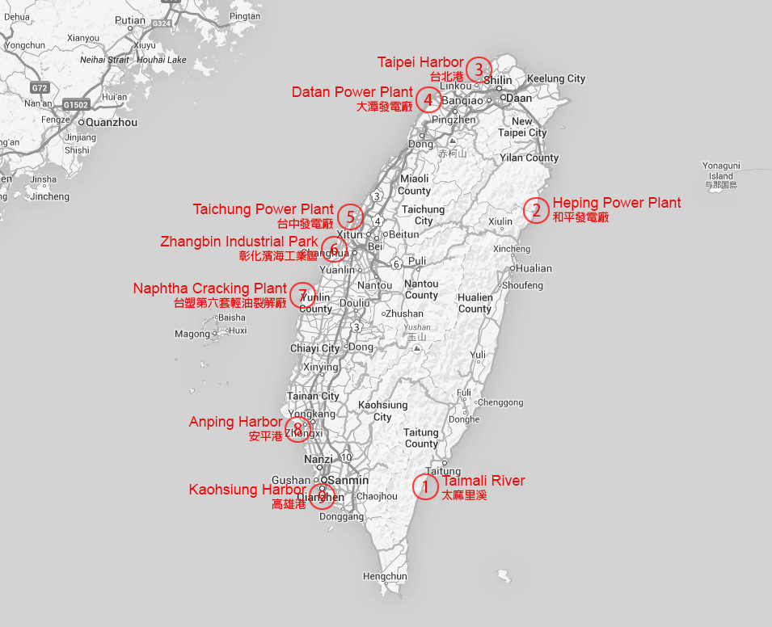
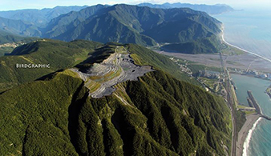
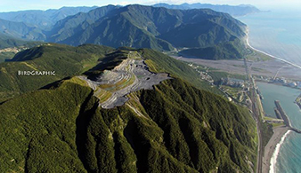

Landscape Changes Along Taiwan's Coastline in Two Decades
|  |
For the last two decades, the landscape of Taiwan's coastline changes dramatically due to urbanization and natural disasters. Nine areas that can be seen clearly on satellite images are highlighted on the left diagram. Among these changes, there are three important power plants, three harbor extensions, two newly constructed industrial parks, and the mouth of a river. They show how an island demands new lands during the industrial development and how natural disasters impact people living on the east coast facing the Pacific Ocean. |
|
Traditional Chinese Translation: |
Change 1: Taimali River, Taitung
On August 2009, the landscape of Taimali River mouth is changed by Typhoon Morakot coming from the Pacific Ocean with 90 mph (150 km/h) peaking wind and 109.3 inch (2777 mm) peaking rainfall. The extreme amount of rain caused the sudden rise in water level and the collapse of river bank. The water flooded the mouth area and resulted in the destruction of bridges, railways, buildings, and farms as shown in the right two images above retrieved from Taiwan National Museum of Natural Science.
Change 2: Heping Power Plant, Hualien
 

Heping Power Plant constructed from 1999 to 2002 is a coal-fired power plant located in a cement industrial park near processing factories and a specifically designed shipping harbor. It is owned by Taiwan Cement Corporation and used to support the massive power needed for cement production. It generates 1320 Megawatt per year and is the largest power plant on Taiwan’s east coast. In the timelapse, the areas that change from green to white indicate limestone mines. The mining process removes the top of several mountains as shown in the right two images above retrieved from Taiwan Aerial Imaging.
Change 3: Taipei Harbor, Taipei
Taipei Harbor is an artificial harbor built by land reclamation near Taiwan’s capital city, Taipei. It is designed to be an auxiliary harbor of the largest one, Keelung Harbor, in north Taiwan and will possibly replace Keelung Harbor in the future. Ports on the harbor are mainly used for operations of large container ships. The harbor shares cargo volume with Keelung Harbor and thus reduces the traffic load in central Taipei area. The right two images above are retrieved from Taipei Port Office website and Wikipedia.
Change 4: Datan Power Plant, Taoyuan
Datan Power Plant is a gas-fired combined-cycle thermal power plant located in Taoyuan. It balances the power needed between northern and southern Taiwan. Although using liquefied natural gas costs more, it emits less carbon dioxide and thus is more environmental friendly and reduces the air pollution. Combining thermodynamic cycles like reusing the waste heat of a previous heat engine improves the overall efficiency and reduces fuel cost. The power plant also has wind power units operated by the wind from Taiwan Strait. The right two images above are retrieved from Wikipedia and Taiwan Power Company’s website.